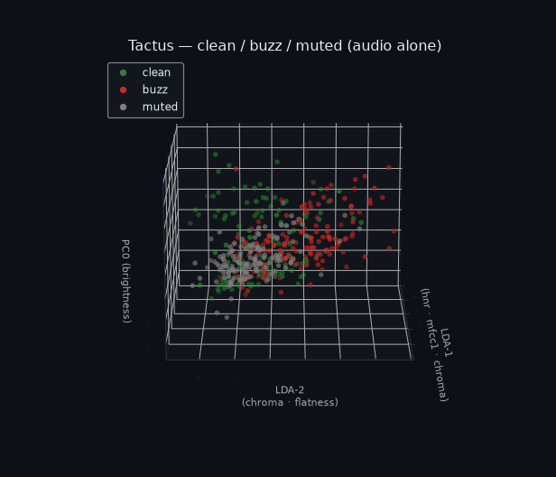
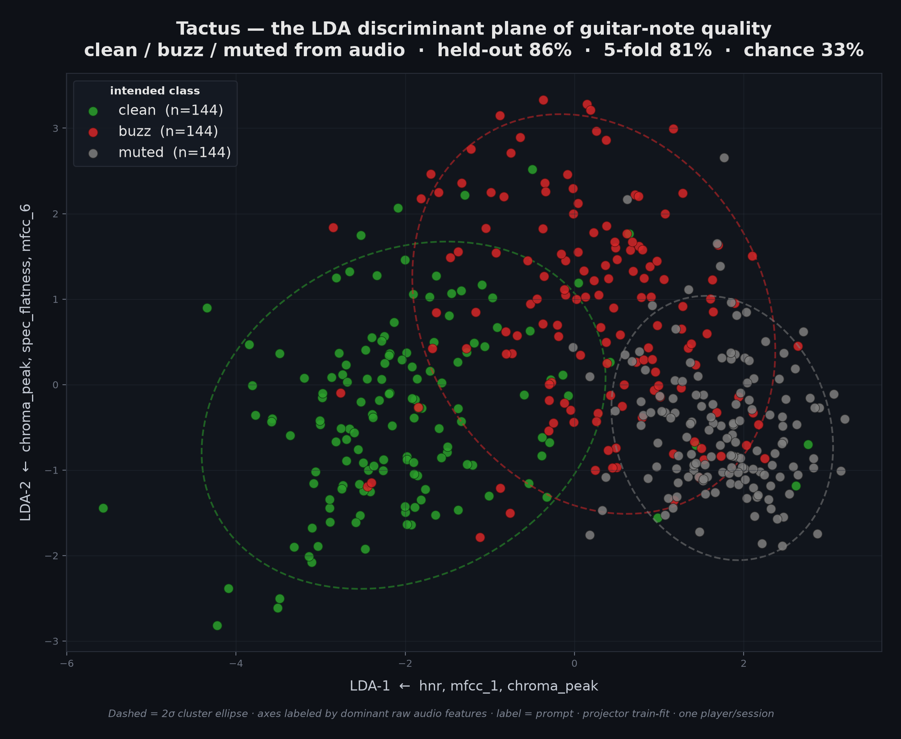
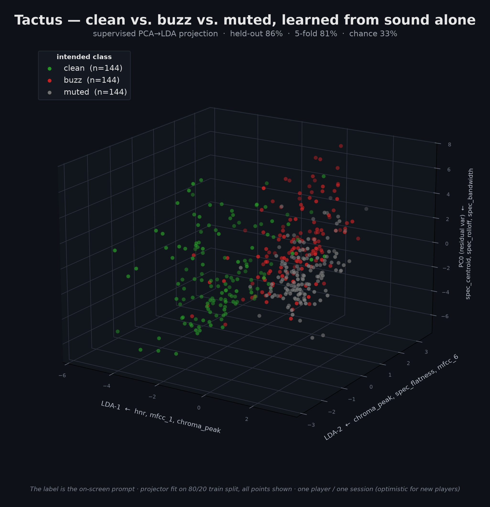
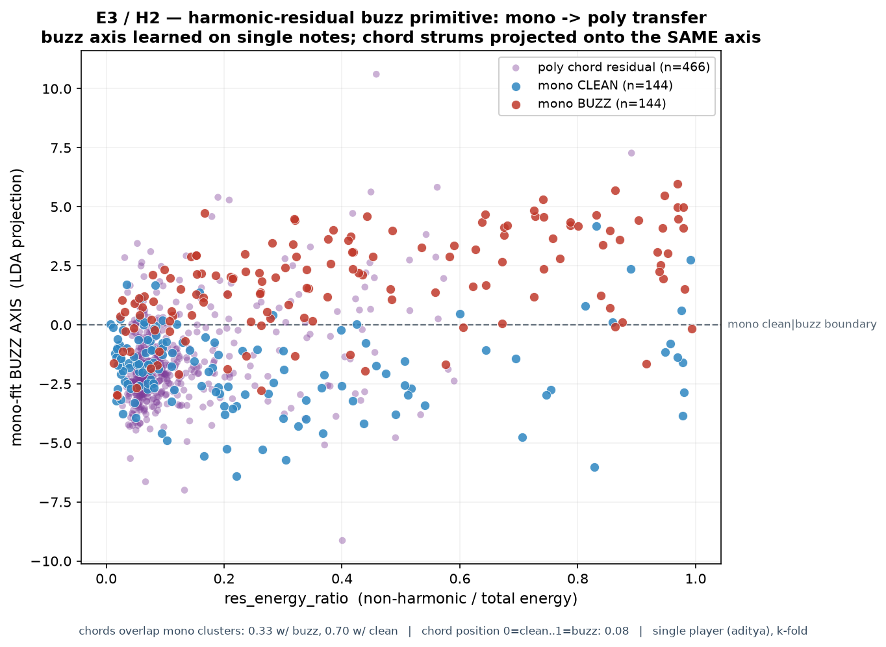
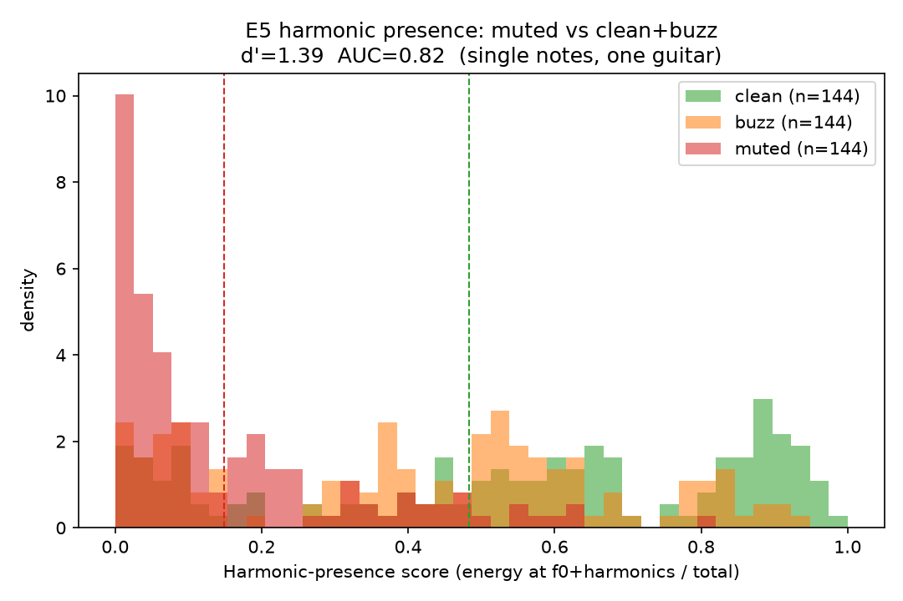
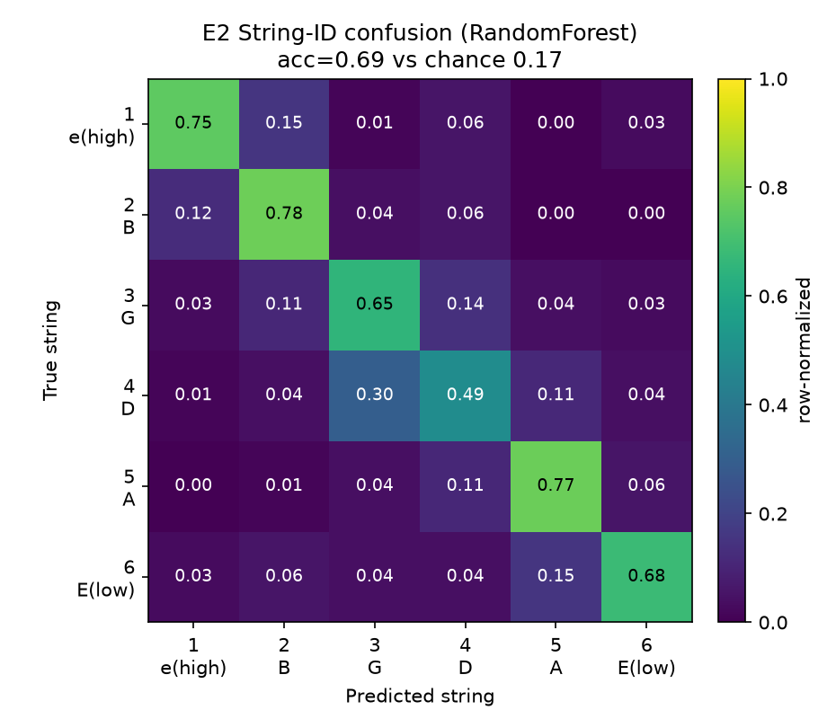
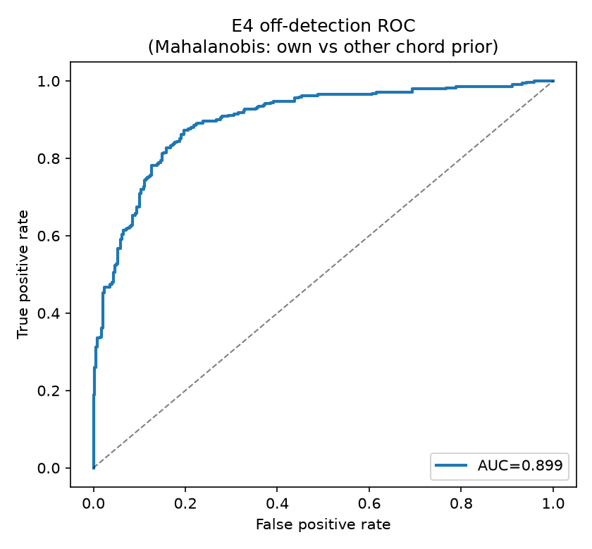
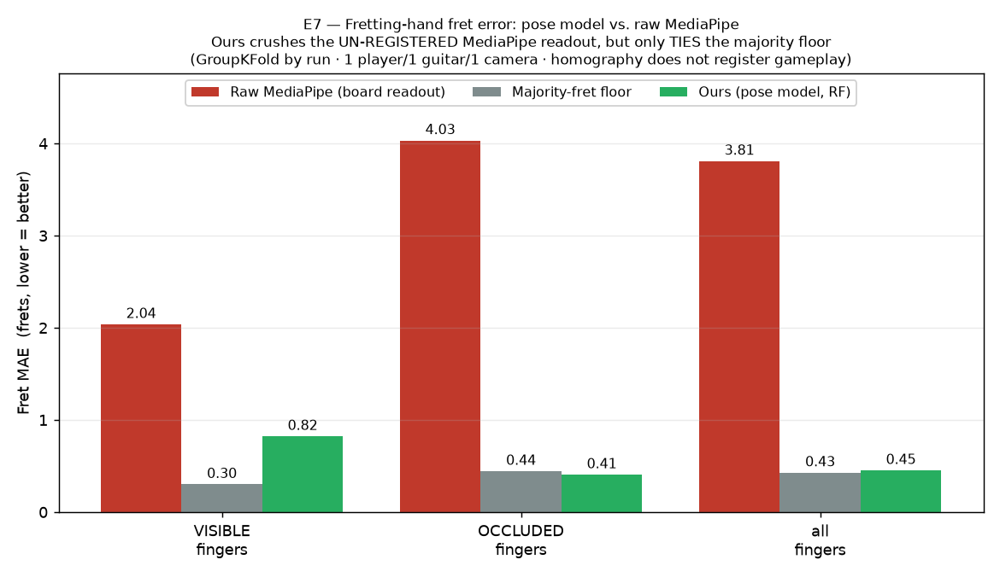
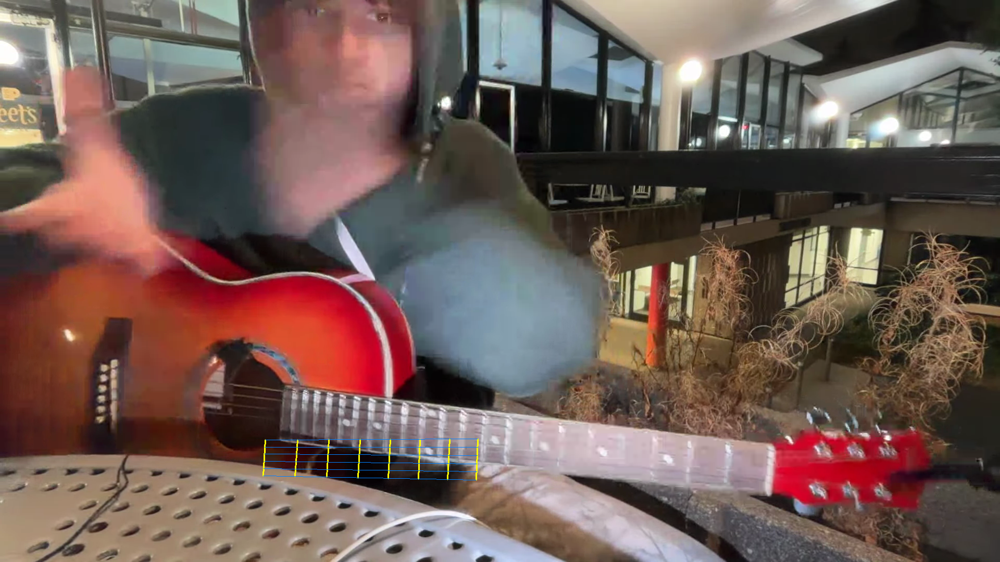

Offline-analysis results · UC Berkeley AI Hackathon · one player (aditya), one guitar (acoustic-1).
The honesty is the credibility — every number is held-out, base-rate, fit-on-train-only.
cleanbuzzmuted432 single notes · 600 chord strums · 83 recordings
Axes are labeled by their named-feature loadings (LDA-1 ← hnr · mfcc_1 · chroma_peak, …) — the geometry has meaning.
Money shots

▶ Animated. clean/buzz/muted rotating in named PCA→LDA space — separated on audio alone.

E1 · the separation. clean/buzz/muted in the LDA plane with 2σ ellipses. clean isolates; buzz bridges to muted (d′ 1.81) — exactly the audible physics.

E1 · 3D money shot. The same three quality classes in named PCA→LDA space.

E3 · the key bet. Single-note buzz axis learned on mono; chord residuals land on the same axis — the buzz primitive transfers to polyphony without a per-chord library.

E5 · muted = missing harmonic. Harmonic-presence score; the muted spike at 0 (body-tap) + lobe (palm-mute) recovers the two muting techniques.

E2 · string from timbre. 0.688 (4× chance); errors cling to the diagonal — adjacent-string ambiguity.

E4 · "wrong chord?" Mahalanobis off-detection ROC, AUC 0.899 — match/off works even though chord-ID from audio doesn't.

E7 · the honest negative. We beat raw MediaPipe — but it's un-registered, and we only tie a majority floor.

Why vision didn't land. The calibration homography floats the fret grid on neither neck of the gameplay frame — the fixable bottleneck is per-frame registration.
Read before believing any number
One player, one guitar, one camera. No leave-one-player-out is possible → every result is k-fold / GroupKFold and is optimistic for new players; a 2nd player is the biggest unlock.
Preprocessing is fit on train folds only; numbers at natural base rates; the prompt is the label (F0/harmonics only verify).
The twin homography is hand-clicked (coarse) and does not register gameplay frames — which is exactly why E7 is reported as an honest negative.
Chord audio-quality labels are noisy (chords were often slightly buzzed) → we report chord transfer as geometry, not calibrated accuracy.
We also found and fixed a data-integrity bug mid-run (chord event_id collisions across sessions) before it reached a result. Full methodology: docs/28.